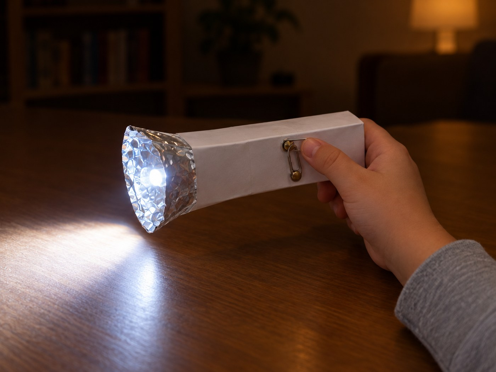

전체 단원 › 실험·활동 › 6학년 2학기 과학
우유팩 손전등

우유팩과 LED로 진짜 켜지는 손전등을 만들며 전기 회로를 배워요.
50분 · 난이도 ★★★ 도전
준비물
- LED 1개 — 3V용, 지름 5mm 흰색 LED
- 건전지 끼우개 — AA 2개용, 빨간 선·검은 선 달린 것
- 할핀 2개, 클립 1개 — 스위치용. 클립은 집에 있는 것
- AA 건전지 2개 — 리모컨용 건전지
- 우유팩 1개 — 손전등 몸통
- 알루미늄 호일 — 반사판에 붙여 빛을 모아요
- 테이프, 가위, 송곳 — 송곳은 어른이 사용해요
만드는 방법
- 몸통 만들기
우유팩 윗부분을 잘라 내고, 건전지 끼우개가 안에 쏙 들어가는지 확인해요. - 클립 스위치 만들기
우유팩 옆면에 3cm 간격으로 할핀 두 개를 꽂고, 한쪽 할핀에 클립을 걸어요. 클립을 돌려 다른 할핀에 닿게 하면 불이 켜지는 스위치가 돼요. - 반사판 만들기
도안의 반사판을 오려 안쪽에 호일을 붙이고 원뿔 모양으로 말아요. 가운데 작은 구멍에 LED를 끼워요. - 회로 연결하기
회로 연결도를 보며 연결해요. LED의 긴 다리(+)는 빨간 선에, 짧은 다리(−)는 할핀 하나에, 다른 할핀은 검은 선에 감아 테이프로 고정해요. - 불 켜기
건전지를 넣고 반사판을 우유팩 입구에 테이프로 붙여요. 클립 스위치를 닫으면 불이 켜져요. 맨 위 사진처럼요! 안 켜지면 LED 다리 방향을 바꿔 다시 연결해 보세요.
관찰해 봐요
- 클립 스위치를 열면 불이 어떻게 되나요? 왜 그럴까요?
- LED 다리를 거꾸로 연결하면 어떻게 되나요?
- 반사판이 있을 때와 없을 때 벽에 비친 빛은 어떻게 다른가요?
왜 그럴까?
전기는 건전지에서 나와 전선을 따라 한 바퀴 빙 돌아 다시 건전지로 돌아가야만 흘러요. 이 길이 이어지면 LED에 불이 켜지고, 클립 스위치를 열어 길을 끊으면 불이 꺼져요. LED는 한쪽 방향으로만 전기를 통과시켜서 다리 방향이 중요해요.
학교 교육과정 연결
- [6과15-01] 전지와 전구, 전선을 연결하여 전구에 불을 켜보고, 불이 켜지는 전기 회로의 특징을 말할 수 있다.